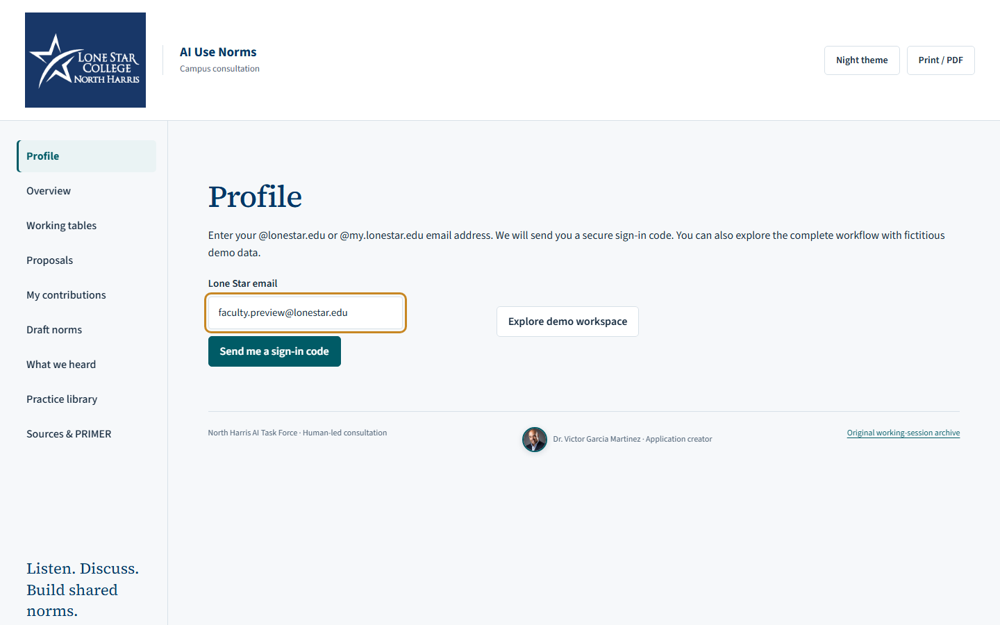
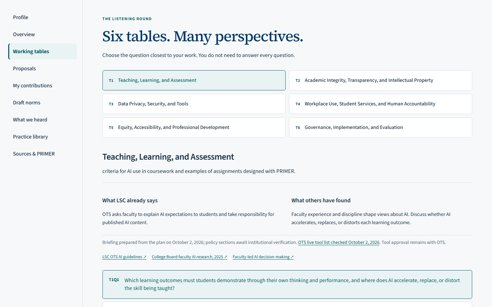
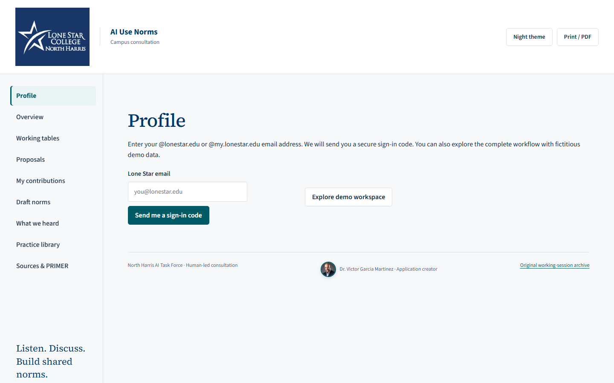

AI use is already part of daily work.
Teaching, assessment, student services, privacy, and workplace practice are changing at the same time.
North Harris academic leadership
A guided way to listen, document perspectives, and build shared AI use norms.
AI Use Norms consultation
Open the consultation appA human-led consultation tool for North Harris.
The leadership case
Teaching, assessment, student services, privacy, and workplace practice are changing at the same time.
Faculty, staff, facilitators, and leadership see different opportunities, responsibilities, and risks. This consultation is for employees; students do not participate.
The app preserves contributions, revisions, and the response back to participants.
Instead of a single survey or a single meeting, the consultation creates a repeatable process for informed participation.
Lone Star's published resources
OTS calls for responsible exploration, protection of sensitive data, review of generated content, and clear academic expectations.
Read the institutional guidelinesThe page lists Copilot for Microsoft 365 as in testing and ChatGPT and Claude as unapproved for internal use. Confirm current status with OTS.
Read the tool and data-level comparisonNeither page reports what North Harris participants know, believe, or currently use.
Reviewed October 7, 2026. No update date appeared in the page text reviewed. A tool listing does not establish local adoption.
Why investigate North Harris?
The app organizes experiences and reasoned proposals for human review across six working tables.
Proposed inquiry, informed by the OTS resources. Voluntary responses describe participants, not campus-wide prevalence. A knowledge test would require a separate validated instrument.
Purpose
It helps the college gather perspectives before norms are drafted, reviewed, and refined.
Designed for trust
Employee participants sign in with a verified @lonestar.edu email address and confirm their employment. Students do not participate.
A name is required, while roles and profile information do not create additional permissions.
Administrators and committee members guide access, coding, synthesis, and follow-up.
What this protects
Every contribution can be understood in context while the consultation remains accountable to human judgment.
A simple start
Public app screen shown with a fictional preview address.


Choose the closest question
Working table 1
Which learning outcomes must students demonstrate through their own thinking and performance, and where does AI accelerate, replace, or distort the skill being taught?
Which AI uses should be prohibited, permitted, or required at each stage of an assignment?
What evidence should demonstrate a student's learning process when AI is used?
What discipline-specific activity would develop responsible AI skills for students' future work?
Working table 2
What should students and employees disclose about their use of AI?
What minimum elements should every North Harris syllabus AI statement contain, and what rule should apply when a syllabus or assignment is silent?
What evidence and review steps should be required before a finding of AI-related academic misconduct, given that detection tools alone are not reliable evidence?
What safeguards should apply when AI is used with copyrighted materials, research, or institutional publications?
Working table 3
Which institutional data may be entered into each category of AI tool?
What information must a vendor provide before an AI tool is considered for institutional use?
What process should employees follow to request, pilot, and review an AI tool, including AI features that appear inside software LSC already uses?
What should happen when an AI tool exposes data or materially changes its features or terms?
Working table 4
Which workplace or student-service tasks would benefit from an AI pilot?
Which decisions must remain under a qualified employee's authority?
How should people be informed when they interact with AI or receive an AI-assisted decision?
What conditions, including workload, training time, and job security, would make an AI pilot acceptable to the employees whose work it affects?
Working table 5
What barriers prevent faculty, adjuncts, or staff from taking part in responsible AI use?
What equivalent alternatives should be available when an AI tool is inaccessible, unaffordable, or declined?
What AI competencies should employees demonstrate in their particular roles?
What training formats, time, and recognition would make participation practical across schedules and employment categories?
Working table 6
Which norms should apply across North Harris, and which decisions should remain with a discipline, a unit, or an individual instructor?
Which norms can North Harris adopt itself, and which must be referred to OTS or the system policy process?
What indicators and evidence should show whether a norm or pilot is working?
How often should the norms be reviewed, and what process should handle exceptions, unresolved disagreements, and requests for change?
Simulated app walkthrough
Use Play to see the public demo move through the participant experience.

Close the loop
The app makes the consultation process visible. Participants can revisit their saved input, while leaders can return with synthesized themes, draft norms, and next actions.
A simple dean action
Prepared by
Dr. Victor Garcia M. Application creatorA shared campus conversation can begin with one invitation.